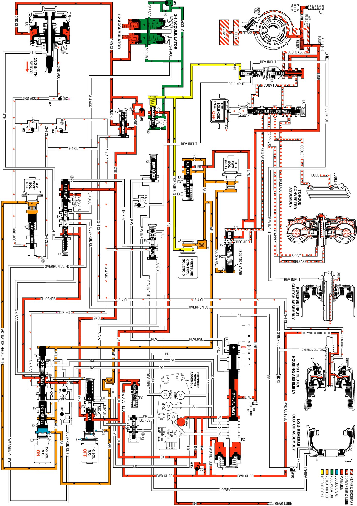

Overdrive Range, 3-2 Downshift
Overdrive Range, 3-2 Downshift
Similar to a forced 4-3 downshift, a forced 3-2 downshift can occur because of minimum throttle (coastdown conditions), heavy throttle or increased engine load. In order to achieve a forced 3-2 downshift, the PCM energizes the 2-3 shift solenoid valve and the following changes occur:
Energized by the PCM, the normally open solenoid closes and blocks the signal B fluid from exhausting through the solenoid. This creates pressure in the signal B fluid circuit at the solenoid end of the 2-3 shift valve.
2-3 Shift Valve Train
The signal B fluid pressure from the shift solenoid moves both valves to the downshift position against AFL fluid pressure acting on the 2-3 shift valve. This causes the following changes:
^ The AFL fluid is blocked from the D432 fluid circuit and the D432 fluid exhausts past the 2-3 shuttle valve.
^ The 2nd fluid is blocked from feeding the 3-4 signal fluid circuit and the 2nd fluid is routed into the servo feed fluid circuit.
^ The 3-4 signal fluid is exhausted past the valve. The 3-4 clutch fluid and the 3rd accumulator fluid, which were fed by the 3-4 signal fluid, also exhaust.
3-4 Clutch Releases and 2-4 Band Applies
3-4 Clutch Piston
The 3-4 clutch fluid exhausts from the piston and the 3-4 clutch plates are released.
3-4 Clutch Exhaust Checkball (#4)
Exhausting 3-4 clutch fluid seats the #4 checkball and is forced through orifice #13. This orifice controls the 3-4 clutch fluid exhaust and the 3-4 clutch release rate.
2-4 Servo Assembly
The 3rd accumulator fluid exhausts from the servo assembly. The 2nd clutch fluid pressure moves the 2nd apply piston against the servo return spring force in order to move the apply pin and apply the 2-4 band.
3-2 Downshift Valve and 1-2 Upshift Checkball (#8)
The 3-4 clutch fluid exhausts from the valve and the spring force moves the valve into the second gear position. However, before the spring force overcomes the exhausting 3-4 clutch fluid pressure, the 2nd fluid feeds the 2nd clutch fluid circuit through the valve. This bypasses the control of orifice #16 at the #8 checkball and provides a faster 2-4 band apply. Remember that the #8 checkball and orifice #16 are used to help control the 2-4 band apply during a 1-2 upshift.
Downshift Timing and Control
At higher vehicle speeds, the 2-4 band apply must be delayed to allow the engine speed RPM to increase sufficiently for a smooth transfer of engine load to the 2-4 band. Therefore, exhaust of the 3rd accumulator fluid must be delayed. However, at lower speeds the band must be applied quickly. In order to provide for the varying requirements for the 2-4 band apply rate, the exhausting 3rd accumulator fluid is routed to both the 3rd accumulator checkball (#2) and the 3-2 control valve.
3rd Accumulator Checkball (#2)
The exhausting 3rd accumulator fluid seats the #2 checkball and is forced through orifice #12. This fluid exhausts through the 3-4 clutch and the 3-4 signal fluid circuits and past the 2-3 shift valve. Orifice #12 slows the exhaust of the 3rd accumulator fluid and delays the 2-4 band apply rate.
3-2 Control Solenoid Valve and 3-2 Control Valve
These components are used to increase the exhaust rate of 3rd accumulator fluid, as needed, depending on the vehicle speed.
The 3-2 control solenoid valve is a normally closed On/Off solenoid controlled by the PCM. The PCM controls the solenoid state during a 3-2 downshift according to vehicle speed.
Low Speed
^ At lower vehicle speeds, the PCM operates the 3-2 control solenoid valve in the Off position.
^ In the Off position the solenoid blocks actuator feed limit fluid pressure from the 3-2 control valve.
^ With no actuator feed limit fluid pressure, the 3-2 control valve spring force keeps the valve open to allow a faster exhaust of 3rd accumulator fluid through orifice #14 into the 3-4 clutch fluid circuit.
^ A faster exhaust of the 3rd accumulator exhaust fluid provides a faster apply of the 2-4 band, as needed at lower vehicle speeds.
High Speed
^ At high vehicle speed, the PCM operates the 3-2 control solenoid valve in the On position allowing actuator feed limit fluid to pass through the solenoid. This pushes the 3-2 control valve into the closed position.
^ This action permits a slow apply of the 2-4 band by blocking off 3rd accumulator exhaust fluid from entering the 3-4 clutch fluid circuit through orifice #14.
^ This allows the engine speed to easily come up to the necessary RPM before the 2-4 band is applied.
3rd Accumulator Exhaust Checkball (#7)
After the downshift is completed, the #7 checkball unseats and allows the residual fluid in the 3rd accumulator fluid circuit to exhaust.
Pressure Control (PC) Solenoid Valve
Remember that the PC solenoid valve continually adjusts torque signal fluid in relation to the various PCM input signals (mainly the throttle position).
Overdrive Range, 3-2 Downshift
Overdrive Range, 3-2 Downshift:
